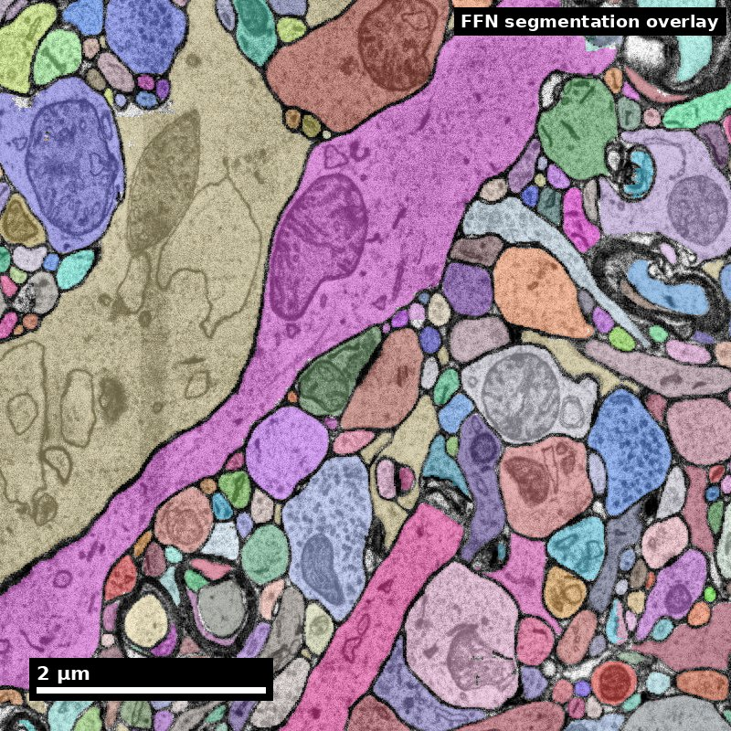
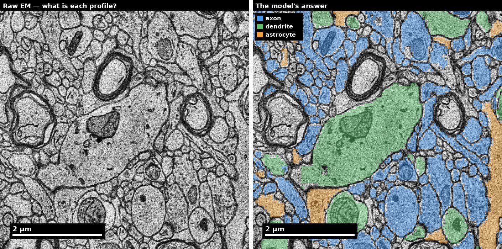

Membranes, neurites,and the connections between them.

Different object labels in one section of densely packed neural tissue.
Does each object stay continuous through the volume?
A single section cannot establish a neurite’s full trajectory or its synaptic partners.